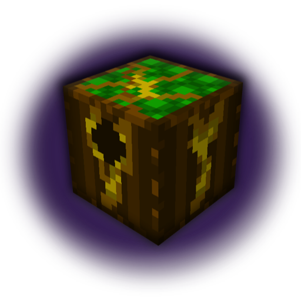

Cambium Wiki
Welcome to the Cambium Wiki

Cambium is a biological tech mod for Minecraft 1.21+ that introduces a new form of resource generation: Solar Digestion. Instead of quarrying the earth, players cultivate specialized flora that metabolizes sunlight and minerals into valuable resources.Key Concepts
- Living Machinery: Machines in Cambium are not static metal boxes; they interact with the environment, requiring specific light levels and biological inputs.
- The Cycle: Success in Cambium relies on maintaining a closed loop—converting organic waste into Mineral Soil, which feeds your Resource Trees
 .
.
Installation
- Loader: Fabric
- Requires: Fabric API
- Recommended: JEI for recipe viewing.
Navigation
- Getting Started
- Living Materials
- Resource Trees
- Machines: Solar Digester | Solar Concentrator
- Mycelial Network
- Phloem Logistics
- Photovoltaic Armor
Contributing
Found a bug? Have a suggestion?
Click Here!Last updated: March 17, 2026